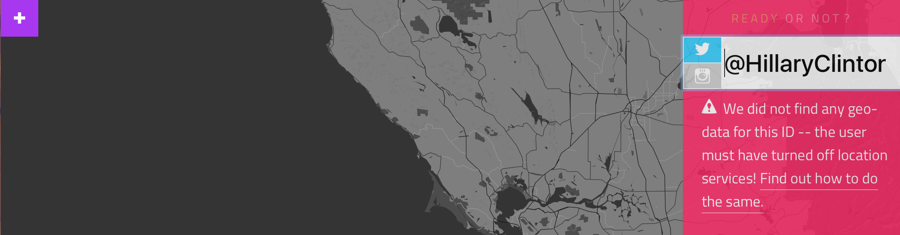

Phishing - Advanced URL Analysis - Obfuscation, Clickjacking and OSINT Gathering
Cybersecurity First Principles
-
Layering: Cybersecurity uses multiple layers of defense when protecting information or resources. If one layer is defeated the next layer should still be defending.
-
Information Hiding: Information hiding is any attempt to prevent people from being able to see information. It can be hiding the content of a letter, or it can be applied to hiding how the letter is delivered. Both ways can prevent people from being able to see the information. This lesson looks at how malicious information can be hidden in URLs or other data fields.
Introduction
Lesson goals
- Obfuscation of URLs and Pages
- Clickjacking
- Open Source INTelligence (OSINT) gathering
Materials required
- Internet connected Machine
Prerequisite lessons
Table of Contents
Obfuscation of Web Content
Obfuscation of URLs using Encoding
Clickjacking
Open Source INTelligence Gathering
Additional Readings
Acknowledgements
Obfuscation of Web Content
Obfuscation means the act of making something obscure, unclear, or unintelligible. In this sense, it means to make code that is intentionally hard to read, usually to prevent the code of an atttack from being easily read.
Examine this link: https://robinagandhi.github.io/phishing-demo/obfuscated.html
It is similar to the page in the URL Analysis Lesson in form and function but now examine its page source. It has been obfuscated using an external javascript file. Examine that file as well: https://robinagandhi.github.io/phishing-demo/myscr150731.js
Spammers use such obfuscation to avoid detection and analysis. Navigate away from such pages or delete emails that have gone to such lengths to conceal their “trickeries”.
Just viewing the source files for obfuscated pages provides no useful information. But if we put our minds to it, we can defeat the bad guys. Navigate back to the obfuscated page. Then right click on a blank area and select Inspect or Inspect Element. In the Elements tab unravel the HTML code that is computed by the browser to render a human readable page. Now it should look similar to the phishing page from before:

The developer tools built into the browser also help us see right through the obfuscated data.
Obfuscation of URLs using Encoding
Examine links on this page: https://robinagandhi.github.io/phishing-demo/encoding.html
Have you seen links like this before? Examine the page source (right click the blank area and click view source).
Now click on the URLs to reveal their true destinations. How is this working?
Most humanly readable domain names map to IPv4 addresses. IPv4 addresses are 32-bit binary numbers. Typically, they are expressed as 4 sets of decimal numbers from 0-255. For example, unomaha.edu maps to the 137.48.1.233 IP address.
It just so happens that 32-bit IP addresses can be expressed in Octal, Decimal and Hex formats. Browsers know how to interpret IP addresses in these formats.
Links #1-3
Links #1-3 are explained below for an IP address that maps to google.com
216.58.194.36 # One of the IP addresses for google.com
Decimal (Base 10) and Hex (Base 16) Encoding
First, convert to Binary (Base 2)
216 = 11011000
58 = 00111010
194 = 11000010
36 = 00100100
Combined Binary: 11011000001110101100001000100100
Decimal equivalent: 3627729444 --> http://3627729444/
Hex equivalent : 0xD83AC224 --> http://0xD83AC224/
Octal Encoding (Base 8)
Octal equivalent numbers need to be padded with a leading zero.
216 = 0330
58 = 072
194 = 0302
36 = 044
Octal equivalent: http://0330.072.0302.044/
Security Tip: Never visit links that have IP addresses or numbers as their web address. These are most likely machines connected to the Internet with no legitimate domain name mapping, which means there is no validation. Anybody can set them up with an Internet connected machine.
Link #4
URLs embedded in HTML pages can be encoded in Hex or Decimal encodings. Link #4 href generation is explained below.
ASCII Encoding for www.wellsfargo.com
Hex Encoding (Starts with % sign)
www = %77%77%77
Decimal Encoding (Starts with &#)
wellsfargo = wellsfargo.com
Final URL: http://%77%77%77.wellsfargo.com
This forms the href attribute of Link #5.
ASCII Table: http://www.asciitable.com/index/asciifull.gif
# This is a useful resource for ASCII to hex, decimal conversions
The `HTML` column in the ASCII table explains how obfuscation on this page works. For example, `w` maps to the letter `w`. A browser does this automatically and renders a humanly readable webpage. Dev tools (Inspect Element) should also help.
Link #5
Link #5 is an image map. Different regions of the image are mapped to different URLs. Try hovering your mouse over the image starting from the far right, slowly moving towards the left. Notice the change in links in the status bar. Spammers trick victims by embedding images with a mix of malicious and legitimate links using this technique. For example, by chance, you may hover over an image area with legitimate links when checking the status bar, but then click a different (malicious link) area to visit the linked website.
Clickjacking
Visit this link: https://robinagandhi.github.io/phishing-demo/clickjacking.html
At first, there is nothing unusual about this page. There is just a single link to “like the kitten”.
As you should know very well by now, nothing is as it seems. To reveal the true nature of this page click on a modified version of this page below. https://robinagandhi.github.io/phishing-demo/clickjacking-reveal.html

Now you can see, that the page is crafted to steal your clicks and pass them on to an invisible page in front of it. Spammers do this to generate advertisement revenue from unsuspecting users by stealing their clicks. This exploit is called click jacking. You may explore the page source on these pages to notice that such behavior is possible using HTML iframe technology. With an invisible iframe the entire page becomes a minefield for your mouse clicks!
In the demo page, Like the kitten is strategically placed on a link that tweets great things about Dr. Gandhi. You would be “liking” me without really intending to do so!

When playing “free” online games, you may be clicking invisible advertisements!
Open Source INTelligence Gathering
Spear-Phishing
Crafting URLs is just one part of the deception used by spammers. Spear-Phishing is a social engineering technique where a spammer uses intimate details about your life, your contacts, and/or recent activities to tailor a very specific phishing attack.
Watch this 3 min video (if you do not have audio, it is OK):
https://www.youtube.com/watch?v=F7pYHN9iC9I
There is a ton of information on the web pertaining to most of us. This is true even if you do not use social media. Voting registries, court records, county and property records, phone books, online review sites are just some examples. If you use social media, then there is a lot more information to collect. All you need is your target’s name to start reconnaissance.
Visit these sites and see how much information is available about yourself:
Pipl and Spokeo
You may have to pick out yourself from other people who share your name. But that should be easy with additional information about your age and location.
Sites like Facebook, Linkedin, company websites, organizational charts and employee directories, make it easy to craft emails from colleagues, friends, and family. There are commercial tools available to collect what is called Open Source INTelligence or OSINT. Here is a tool that does just that: https://www.paterva.com/web7/buy/maltego-clients/maltego.php
Maltego is an interactive data mining tool that renders directed graphs for link analysis. The tool is used in online investigations for finding relationships between pieces of information from various sources located on the Internet.
Security Tip: Even when clicking on links in emails or websites shared by close colleagues, friends, and family; trust but verify. This advice will seem even more reasonable after going through the Email analysis module.
Geolocation
GPS-enabled smartphones allow photos, videos, messages and social media posts to be Geotagged. Location information is embedded in the metadata for media alongside file name, date, camera information, etc. When geotagged media is shared publicly, location information is often inadvertently shared along with it. Such information aggregated over time starts to reveal private information such as: work and home locations, daily routines, frequented places, vacation destinations, shopping places, and much more.
Tools are freely available for conducting Geolocation OSINT. For example, this tool is aptly named geoCreepy!
Downloads: http://www.geocreepy.com/
Source code: https://github.com/ilektrojohn/creepy
To spread awareness of this issue, an educational web application has been developed.
http://app.teachingprivacy.org (Beware of the “.com” version of this site. This is called domain-squatting)
This web-application takes a twitter handle and aggregates all publicly available geotagged information on a map. For example, here are the travel patterns of Steve Wozniak, co-founder of Apple.

It is often prudent for celebrities and politicians to turn off geotagging in their posts. Here is Donald Trump’s twitter account. He (or someone on his behalf) has taken appropriate steps to avoid leaking information about his whereabouts through social media, even while leaking hot air.

Hillary Clinton is also very cautious about her privacy, unlike her handling of classified emails.

To prevent inadvertent sharing of geolocation data, turn off location services for social media applications. Also, remove geotags from photos before sharing them on social media. Here is some more guidance: http://teachingprivacy.org/prevention/#location
For instance, if you have a twitter account, there is a setting (Settings –> Security and Privacy) to delete any previously tagged locations.

Protecting privacy requires Information Hiding. Deleting or hiding metadata prevents sensitive patterns from being learned over time. This is true even for encrypted https Internet traffic. While https encryption protects message contents, it still reveals the communication endpoints. Over time an accurate communication graph can be built by examining many such communications. To conceal browsing patterns over the Internet, Virtual Private Networks (VPN) are very effective. VPNs work by forming a tunnel between your current connection and a known network (such as the unomaha network). Once a tunnel is formed, all requests you make appear as if they originate from within the known network, since they emanate from the location you have tunneled to.
Additional Readings
- APWG, Phishing Public Education
- Teaching Privacy: http://teachingprivacy.org
Lead Author
- Robin Gandhi
Special Thanks
- A special thanks to Matt Hale, Aaron Vigal and Cade Wollcot for reviews of this module and thoughtful discussions.
License
Nebraska GenCyber 
is licensed under a Creative Commons Attribution-NonCommercial-ShareAlike 4.0 International License.
Overall content: Copyright (C) 2017-2018 Dr. Matthew L. Hale, Dr. Robin Gandhi, Dr. Briana B. Morrison, and Doug Rausch.
Lesson content: Copyright (C) Robin Gandhi 2017-2018.
This lesson is licensed by the author under a Creative Commons Attribution-NonCommercial-ShareAlike 4.0 International License.